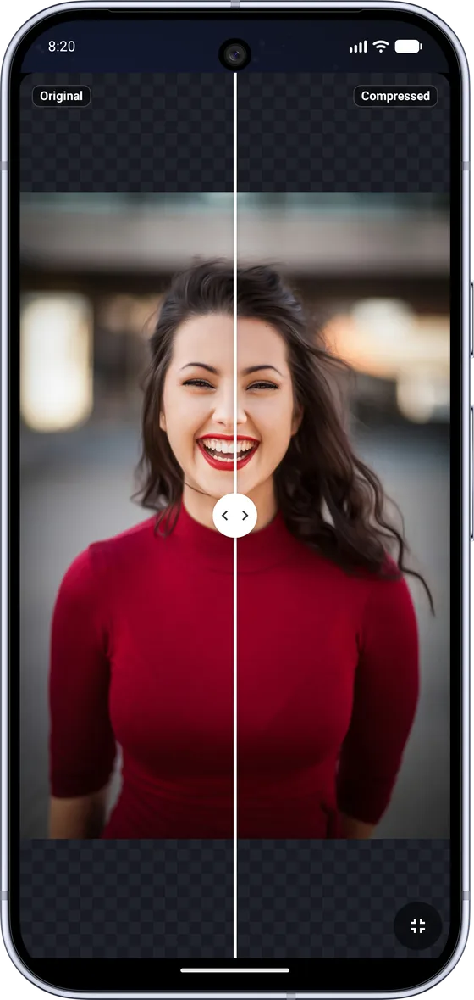
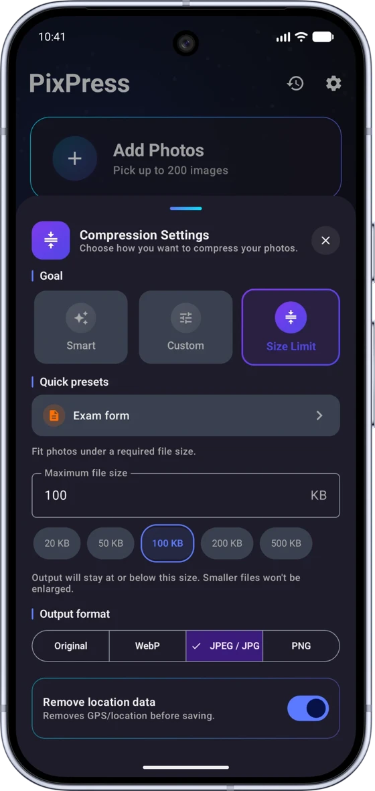

Hit an exact KB target
Size Limit modeType any KB target from 10 to 5,000. A binary-search algorithm converges on that exact file size, not just a rough guess.
Free up phone storage without deleting your memories, or hit an exact KB target for WhatsApp, Instagram and Telegram, email attachments, or UPSC, SSC, IBPS, RRB, Banking, NEET, JEE and state PSC form uploads. Your photos are processed entirely on your phone and never uploaded anywhere.

Some website, form or app suddenly demands a photo under an exact KB limit: an exam portal, a job application, an email that keeps bouncing. You search for a random online "compress to KB" tool, hope it actually hits the target, and hand over your photo to a website you've never heard of, with no idea where that image goes afterward.
Pick your photo, set the target (20 KB, 100 KB, 500 KB, whatever's required), or tap a ready-made preset for exams, social media or email. PixPress converges on that exact size using a binary-search compression algorithm, entirely on your phone. No internet required, no account, no upload. Done in seconds.
On-device processing. Always.
Every photo, signature and document is compressed locally on your phone. PixPress has no server that compression ever touches.
Type any KB target from 10 to 5,000. A binary-search algorithm converges on that exact file size, not just a rough guess.
Drag a fullscreen slider to compare the original and compressed photo side by side before you save or share, so you know exactly what you're trading away.
Smart mode compresses to both WebP and JPEG behind the scenes and automatically keeps whichever comes out smaller, no format knowledge needed.
One-tap presets tuned for UPSC, SSC, IBPS, Railway and other exam forms, plus WhatsApp, Instagram, Telegram and X, so you never have to guess a size.
Select up to 25 photos free (200 for subscribers) and compress them all in one pass to the same target size or preset, instead of one at a time.
Choose exactly what EXIF data to keep or strip, including GPS location, so you can share a photo without leaking where or when it was taken.
Every photo you've compressed is saved to a history you can revisit, re-share or re-export any time, even after you've closed the app.
Pack your compressed photos into a single PDF: a single page, a compact grid, or a print sheet layout, ready to upload or share.
Fully translated into English, Hindi, German, Spanish, French, Arabic, Italian, Portuguese, Japanese and Chinese.
PixPress follows your system theme automatically, with a properly designed dark mode instead of just inverted colors.
If compressing would somehow make a file larger than the original, PixPress keeps your original instead of handing you a worse, bigger file.
Choose one photo or select several for batch compression, straight from your gallery.
Type an exact KB target, or tap a ready-made preset like UPSC Photo, WhatsApp or ID Photo.
PixPress compresses on your device and hands you a file at the exact size you asked for. Nothing ever leaves your phone.
Real screenshots, not mockups. Tap through to see exactly what you'll get.
Switch to Size Limit mode and enter 10–5000 KB, or tap a ready-made exam preset. A binary-search algorithm converges on that exact size, entirely on your device.

Anyone who needs a smaller photo, for any reason. PixPress doesn't care why, it just gets you to the exact size you need.
PixPress is an independent app and is not affiliated with or endorsed by UPSC, SSC, IBPS, RRB, any exam board, recruitment board, passport authority or government agency. Always confirm the exact photo requirements on the official portal you're uploading to.
PixPress processes every photo locally, on your device. There's no server-side compression, no photo upload step, and no account required to use the app.
PixPress does use ads and standard app analytics/crash reporting to keep the app free and working; none of it involves your photos. Full details in the privacy policy.
Your exam photo, signature and ID documents are compressed on your phone and never transmitted anywhere.
Open PixPress, select photos from your camera roll (up to 25 free, or 200 as a subscriber) and run Smart or Size Limit mode to shrink them all in one batch. You get back the same photos at a fraction of the size, so once you've confirmed they look right, you can delete the bulkier originals and reclaim the space, all done on-device with no upload.
Open PixPress, pick your photo, switch to Size Limit mode and enter 20 (KB) as your target, or tap the Exam form or UPSC Photo preset if your portal matches one of the built-in presets. PixPress runs a binary-search compression pass on-device and hands you a file at or under 20 KB in seconds.
No. Compression happens entirely on your device. PixPress has no server that processes or stores your photos. The app works fully offline for compression, so your exam photo, signature or ID document never leaves your phone. See the full privacy policy for details on what limited app data (like crash reports) is handled separately from your photos.
Yes, PixPress is free to download from Google Play. It's supported by ads, with optional in-app purchases available for extra features.
PixPress accepts JPG, PNG, HEIC and other common photo formats as input. For output it supports JPEG and WebP (for the smallest possible file size) and PNG when you need lossless or transparent images. Smart mode automatically compares JPEG and WebP output and keeps whichever is smaller.
Yes. Size Limit mode uses a binary-search algorithm to converge on your exact KB target (anywhere from 10 KB to 5000 KB) rather than a rough estimate. It's a genuine quality optimizer, not a fixed compression preset, so it works across very different photos and targets.
Yes. All compression, resizing and preset logic runs entirely offline on your device. An internet connection isn't needed to compress a photo, only for optional app features like ads or update checks.
No. PixPress is an independent, third-party photo compression app. It is not affiliated with or endorsed by any government entity, exam board, recruitment board, passport authority or public agency, and it doesn't submit applications or guarantee acceptance on any upload portal. Always check the exact requirements on the official website you're applying through.
Not yet. PixPress is currently available for Android only, via Google Play.
Compress with confidence: nothing ever leaves your phone.
GET IT ON Google Play